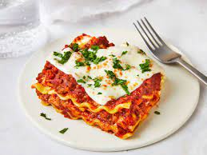

lasagna

Description
Lasagna is a type of pasta, possibly one of the oldest
types, made of very wide, flat sheets. Either term can also
refer to an Italian dish made of stacked layers of lasagna
alternating with fillings such as ragù,\
béchamel sauce, vegetables, cheeses, and seasonings and spices
Ingredients
- Parmesan cheese
- garlic
- olive oil
- ricotta cheese
- mozzarella cheese
- eggs
- onion
- tomatoes
- butter
- flour
- For herbs
- spices
- cayenne pepper
- basil
Steps
- Heat the oven to 400ºF
- Brown the beef and onion
- Prepare the baking dish and assemble the meat sauce
- Begin layering the lasagna
- Continue layering the lasagna
- Bake the lasagna for 1 hour
- Sprinkle with the remaining mozzarella and finish baking
- Cool the lasagna for 15 minutes